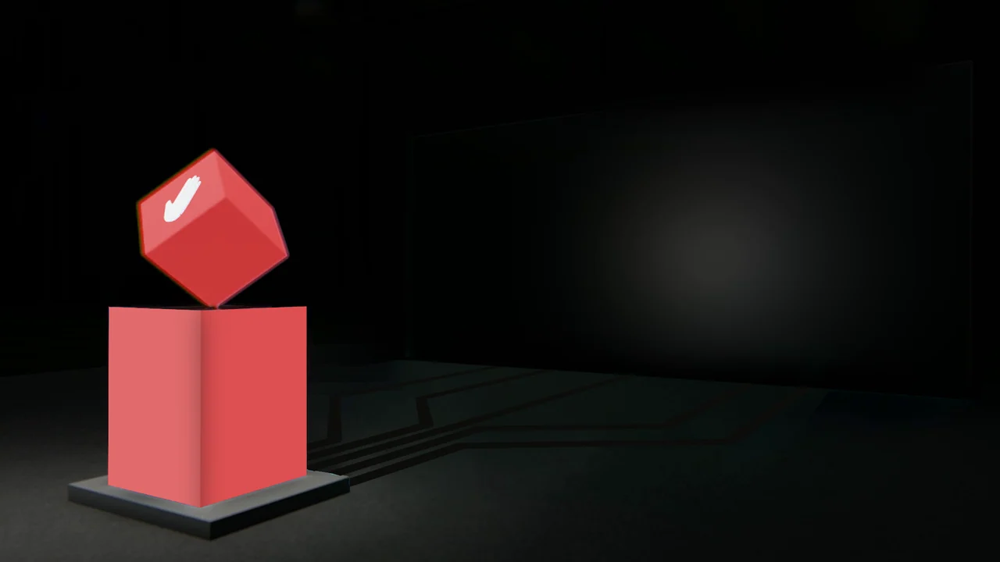

Hand cue on tilted cube
A comparison of native baseline and logo-hidden rendering found zero changed pixels outside the two logo-layer rectangles. Small compositor differences from the saved Photoshop preview are documented privately.
One object connected visually to a larger screen.
Explore the storyExplain an interaction concept through the relationship between hand, object and environment.
A hand cue sits on a tilted cube above a podium. Red floor traces connect it to the matching screen, while a quieter variant shows the same arrangement without illumination.
A comparison of native baseline and logo-hidden rendering found zero changed pixels outside the two logo-layer rectangles. Small compositor differences from the saved Photoshop preview are documented privately.
The PSD structure includes separate Screen, Lines Lit, Lines non Lit, Cube Un Lit and Lit elements, plus imported snapshot material. An After Effects project is present but was not opened or played.
A tilted cube sits above a square podium, with a white hand symbol on its upper face.
Explore the complete compositions and interface states. Select any image for a closer look.
02 / PROJECT IMAGES
Select a view to explore.
Illuminated red cube with a hand symbol above a podium, linked by glowing floor traces to a large red screen.
Red cube with a hand symbol above an unbranded red podium, beside a dark screen and unlit floor traces.

Structure, interaction and visual decisions that give the work its character.
RoleConfirm concept adaptation, scene compositing, color treatment, branding placement and animation work separately from supplied geometry or source footage.
AssetsThe native scenes include imported snapshot material and prepared cube imagery. Source footage, scene geometry, hand symbol and collaborator contributions require attribution; no original 3D modeling is inferred. The clean derivative hides isolated brand layers and retains the underlying scene.
StatusDraft visualization case study. Native PSD layers and two exported compositions reviewed; animation, physical interaction, fabrication and delivery unverified.